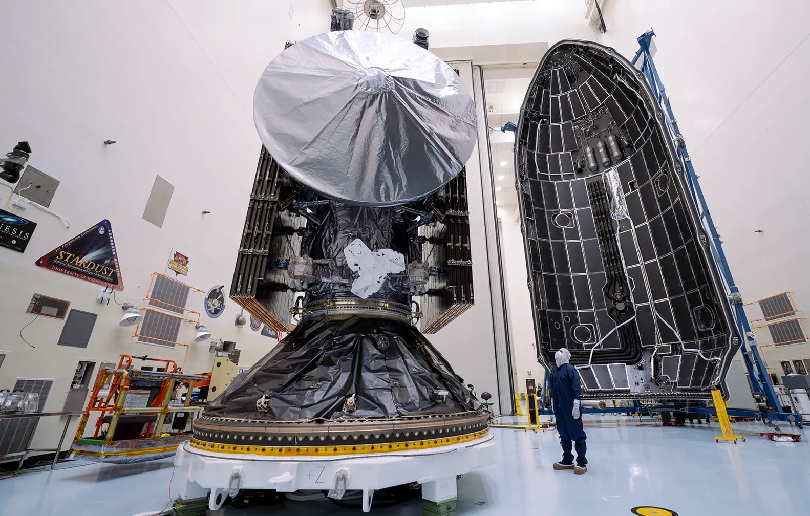
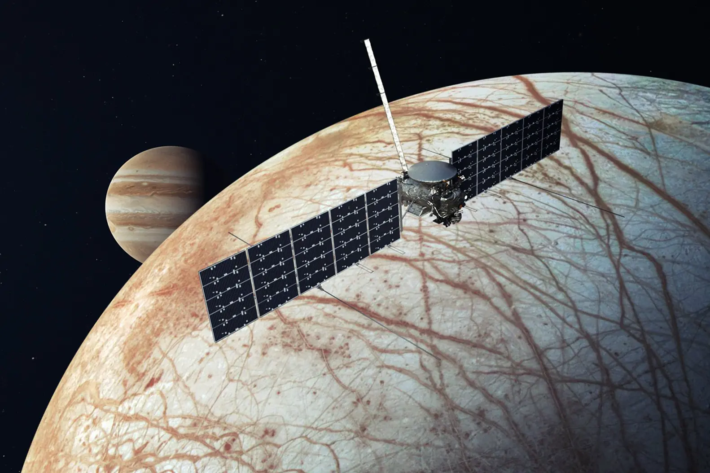

À la recherche de vie extraterrestre dans les océans de Jupiter
La sonde Europa Clipper, lancée le 10 octobre 2024, mettra près de six ans à atteindre Jupiter. Une fois sur place, elle effectuera 45 survols rapprochés d’Europe entre 2030 et 2034, analysant sa surface glacée et son océan souterrain à l’aide de neuf instruments scientifiques.
Les scientifiques pensent que cet océan, chauffé par les forces de marée exercées par Jupiter, pourrait contenir des ingrédients essentiels à la vie, comme de l’eau liquide, des sels minéraux, et une source d’énergie.
Des instruments de pointe
La sonde est équipée de neuf instruments scientifiques, dont des caméras haute résolution, des spectromètres pour analyser la composition de la surface, et un radar capable de percer la glace pour étudier la structure de l’océan sous-jacent. L’un des objectifs principaux est de cartographier la surface d’Europe et d’identifier les zones où l’océan pourrait être le plus proche de la surface, facilitant ainsi de futures missions d’exploration.

Des technicien·ne·s se préparent à encapsuler le vaisseau spatial Europa Clipper de la NASA dans la coiffe de la fusée Falcon Heavy de SpaceX, au centre spatial Kennedy en Floride, le mercredi 2 octobre 2024. Photo © NASA Kennedy Space Center, 2024
Un environnement extrême
Europe est soumise à un environnement radiatif intense en raison de sa proximité avec Jupiter. Pour résister à ces conditions, la sonde est dotée d’un bouclier anti-radiation et effectuera des survols rapides pour limiter son exposition. Malgré ces défis, les données recueillies pourraient révolutionner notre compréhension des mondes océaniques et de leur potentiel à abriter la vie. Et après ?
Si Europa Clipper confirme la présence de conditions favorables à la vie, la prochaine étape pourrait être l’envoi d’un atterrisseur pour analyser directement le matériau de surface, voire forer la glace pour accéder à l’océan. Une telle mission, bien que complexe, ouvrirait la voie à une nouvelle ère dans la recherche de vie extraterrestre.

Des technicien·ne·s se préparent à encapsuler le vaisseau spatial Europa Clipper de la NASA dans la coiffe de la fusée Falcon Heavy de SpaceX, au centre spatial Kennedy en Floride, le mercredi 2 octobre 2024. Photo © NASA Kennedy Space Center, 2024